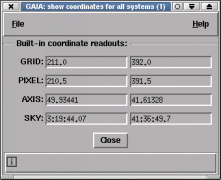

Show Coordinates for all Systems Toolbox

This window will display interactive coordinates for all the
systems that are known for the displayed image. It is of most interest
to when displaying NDFs as you can inspect pixel coordinates, as well
as grid and sky coordinates.
Usually FITS images will have only two built-in coordinate systems,
the grid one shown in the X and Y readouts and a celestial one, shown
in the alpha and delta readouts, so this toolbox is of little interest
to most FITS users at present. However, future standards will provide
additional systems that describe things like the coordinates of each
chip in a mosaic camera and the coordinates of the camera as a whole,
as well as some celestial system.
NDF images have several coordinate systems associated with them:
- GRID: the base coordinates shown in the X and Y windows. These are
a continuous system that start at 1,1 for the pixel at the
lower left.
- PIXEL: the same as GRID, except that the middle of the lower left
hand pixel is 0.5,0.5. These also have any NDF pixel origins
added.
- AXIS: these coordinates are those defined by any axis structures
in the NDF. If none are present then these are the same as
PIXEL.
- SKY: if present this defines a celestial coordinate system.
Other multi-dimensional coordinate systems may be present, if so then their
coordinates will also be shown. The software that produced these should
describe what their meaning is (note that in general a description of each
value, usually a label and any units, will be shown in the short help, just
place the pointer over the value to see this). Note that if your NDF is using
the coordinate system stored in its FITS extension then this may not apply and
the systems available will be just the same as a FITS image.